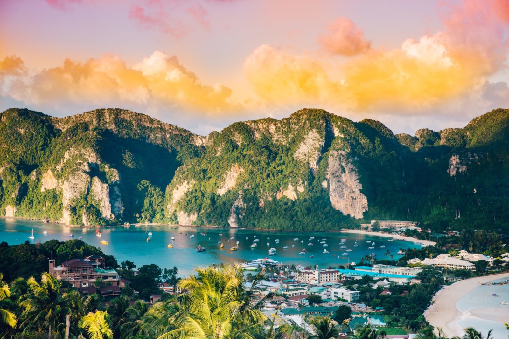

DALEKA PUTOVANJA
Daleka putovanja predstavljaju pravo putovanje iz snova, namijenjeno onima koji žele doživjeti svijet u njegovoj punoj raznolikosti. Atlas Tour vas vodi na destinacije koje oduzimaju dah – od egzotičnih azijskih zemalja, mistične Afrike i živopisne Latinske Amerike do modernih metropola Sjeverne Amerike. Ova putovanja nude susret s drugačijim kulturama, tradicijama i načinima života, ali i priliku za osobni rast i nezaboravne doživljaje. Uz stručno planirane programe, iskusne vodiče i posebnu pažnju posvećenu sigurnosti i udobnosti, daleka putovanja s Atlas Tourom pretvaraju maštu u stvarnost i ostavljaju uspomene koje traju cijeli život.
Dubai
Dubai je destinacija koja spaja futurizam, luksuz i tradiciju Bliskog istoka. Impresivni neboderi, vrhunski hoteli i luksuzni shopping centri stoje uz tradicionalne tržnice, pustinjske krajolike i bogatu arapsku kulturu. Putovanje u Dubai s Atlas Tourom nudi savršen balans između modernog urbanog doživljaja i autentičnih iskustava poput safarija u pustinji, krstarenja tradicionalnim drvenim brodom i upoznavanja lokalnih običaja.
10 dana zrakoplovom
1.290 EUR
Egipat
Egipat je kolijevka civilizacije i destinacija koja oduševljava svojom mistikom i poviješću. Piramide u Gizi, hramovi uz Nil i drevne grobnice pričaju priču staru tisućama godina. Atlas Tour nudi putovanja koja spajaju razgledavanje povijesnih znamenitosti s opuštanjem na Crvenom moru. Egipat je idealan za putnike željne kulture, avanture i sunca, a svako putovanje ostavlja snažan dojam i trajnu uspomenu.
12 dana zrakoplovom
2.200 EUR
Kina
Kina je zemlja tisućljetne povijesti, impresivne kulture i nevjerojatnih kontrasta. Od drevnih carskih palača i Kineskog zida do modernih megagradova, Kina nudi putovanje kroz vrijeme i prostor. Atlas Tour omogućuje vam da upoznate tradicionalne običaje, bogatu filozofiju i raznoliku kuhinju, uz stručno vođene ture i pažljivo osmišljene programe. Putovanje u Kinu donosi duboko kulturno iskustvo i nezaboravan uvid u jednu od najstarijih civilizacija svijeta.
20 dana zrakoplovom
3.500 EUR

Tajland Deluxe
Tajland je zemlja osmijeha, egzotičnih mirisa i iznimne raznolikosti. Od živahnog Bangkoka i njegovih hramova do rajskih plaža i tropskih otoka, Tajland nudi iskustvo koje oduševljava sva osjetila. Atlas Tour vodi vas kroz bogatu kulturu, fascinantnu povijest i jedinstvenu gastronomiju ove zemlje, uz mogućnost opuštanja, avanture i duhovnog mira. Tajland je idealan izbor za putnike koji traže egzotiku, toplinu i nezaboravne doživljaje.
10 dana zrakoplovom
2.390 EUR